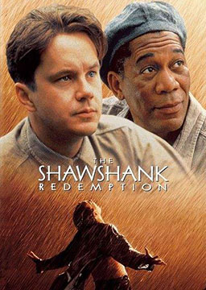

双语小说
收录中英文双语小说300多部，包括世界经典名著、社会小说、悬疑小说等短篇和长篇小说，可按照初中难度、高中难度和大学难度分类阅读，每部小说都有分段中英文对照，点击单词可查看中文翻译。

人性的枷锁 (Of Human Bondage)
作者：威廉·萨默塞特·毛姆 (William Somerset Maugham) [英国]
英国威廉·萨默赛特·毛姆创作的长篇小说，首次出版于1915年。作品文字通俗简洁，含义深刻，可以说是一部呼唤人性全面彻底自由解放的宣言。内容简介：菲利普·凯里自幼父母双亡，不幸又先天残疾，在冷漠而陌生的环境中度过了童年，性格因此孤僻而敏感。在寄宿学校度过的岁月让他饱受了不合理的学校制度的摧残，而当他走入社会后，又在爱情上经历了伤痛。在坎坷的人生道路上，他每跨一步，都要付出艰辛的挣扎，但思想和个性都独立不羁的凯里，一直努力挣脱宗教和小市民意识这两条禁锢自己精神的桎梏，力图在混沌纷扰的生活漩流中，寻求人生的真谛。达·芬奇密码 (The Da Vinci Code)
作者：丹·布朗 (Dan Brown) [美国]
本书以750万本的成绩打破美国小说销售的记录。小说集合了侦探，惊悚和阴谋论等多种风格，并激起了大众对某些宗教理论的普遍兴趣。内容简介：正在巴黎出差的哈佛大学教授罗伯特·兰登午夜接到匿名电话，得知卢浮宫博物馆馆长雅克·索尼埃被害，于是应召来到博物馆，对一系列与达·芬奇的艺术作品有关联的神秘符号进行分析和调查。在与索尼埃的孙女、密码破译天才索菲·奈芙联手对诸多奇形怪状的符号及密码进行整理的过程中，他发现一连串的线索就隐藏在达·芬奇的艺术作品当中。他发现了能解开历史上难解之谜的一把钥匙，并与奈芙跟一位神秘的幕后操纵者展开了斗智斗勇的角逐，而他自己也因此成为一名被追逐者。除非他们能解开这个错综复杂的谜，否则，郇山隐修会苦心掩盖的惊天大秘密以及令人震惊的古老真相，终将永远消失。天使与魔鬼 (Angels&Demons)
作者：丹·布朗 (Dan Brown) [美国]
达芬奇密码前传，虔诚的上帝信徒“欧核中心”的杰出科学家列奥纳多.维特勒毕生致力于以科学的手段证明神的存在。他和其养女、神秘妩媚的科学家维多利亚在实验室里进行了高度机密的试验，成功地制造出了一种极其强大的能量“反物质”。在这个重大发现尚未对外公布时，列奥纳多就在实验室里惨遭杀害，一颗眼珠被凶手挖走，胸口上赫然印着一个神秘的标记“光照派”。更令人震惊的是，藏在地下的反物质不翼而飞，而这些反物质一旦与物质相遇便会产生巨大的能量，足以摧毁一座城市。哈佛大学的符号学专家罗伯特·兰登应“欧核中心”负责人之邀，前来调查这个神秘的符号。就在当天，失踪的反物质被人发现位于梵蒂冈城地下某处。离开了实验中心的反物质，在二十四小时之后就会自行爆炸，而这天正是天主教教皇选举日。来自世界各地的天主教红衣主教会聚在梵蒂冈城，藏在地下的反物质就如同一枚定时炸弹，如不能及时找到，整个梵蒂冈城便会成为一片废墟。还有六个钟头，刻不容缓，兰登与列奥纳多之女一起踏上了前往梵蒂冈的冒险之旅。
英语笑话 (English Jokes)
作者：未知 (unknow) [未知]
充满了趣味与欢笑，让你心情愉快，容易受感染，与你同乐。给人亲切的感觉，谈笑之间趣味横生。幽默使人神采奕奕、容光焕发。看了这些笑话，除了使你开怀大笑、忘却烦忧之外，还能让你在各个场合得心应手，轻易营造欢乐气氛，成为众人目光焦点。从笑话中学习英语，轻松自在，让你充满自信。
绿野仙踪 (The Wonderful Wizard of Oz)
作者：L.弗兰克.鲍姆 (L. Frank Baum) [美国]
本书是美国儿童文学协会（CLA）评选的“十部美国最伟大的儿童文学作品”之一，也是美国全国教育协会（NEA）推荐的“最佳童书”之一。是美国儿童文学史上20世纪的第一部受到赞赏的童话，从出版一直行销至今。内容简介：多萝西·盖尔对她在埃姆姨妈和亨利叔叔的堪萨斯农场的生活感到不满，打算出走。这时，却被一场龙卷风刮到了一个陌生而神奇的国度——奥兹国，并迷失了回家的路。在那里，她陆续结识了没脑子的稻草人、没爱心的铁皮人和胆小的狮子，他们为了实现各自的心愿，互相帮助，携手协作，历尽艰险，遇到许多稀奇古怪的事情。最终，他们凭借自己非凡的智能和顽强的毅力，都如愿以偿地完成自己的心愿。雾都孤儿（简化版） (Oliver Twist)
作者：查尔斯·狄更斯 (Charles John Huffam Dickens) [英国]
富人弃婴奥利佛在孤儿院里生活9年，被送到棺材店当学徒。由于饥饿和侮辱，迫使奥利佛逃到伦敦，被迫无奈当了扒手。他被富有的布莱罗先生收留，不幸让扒手发现又入贼窝。善良的扒手南希为了营救奥利佛，向布莱罗报信，说奥利佛是他的外孙儿后，她被杀害。警察围剿了贼窝，奥利佛终于得以与亲人团聚。
雾都孤儿 (Oliver Twist)
作者：查尔斯·狄更斯 (Charles John Huffam Dickens) [英国]
英国作家狄更斯于1838年出版的长篇写实小说。该书揭露许多当时的社会问题，如救济院、童工、以及帮派吸收青少年参与犯罪等。该书曾多次改编为电影、电视及舞台剧。内容简介：奥利弗9岁时，孤儿院管事把他送进工厂。奥利弗抽签成了大家的代表，提出因吃不饱而增加口粮的要求，工厂便不愿继续收留他。奥利弗被卖到棺材店老板家。他参加出殡行列，行为举止使老板很满意。但年长学徒故意侮辱他过世母亲的人格，他忍无可忍，拔拳搏斗。老板家将他锁了起来。他星夜出逃，一连步行了7天，到达伦敦。少年杰克·道金斯把他带到破烂的窝藏匪盗的窟。贼首弗根见奥利弗聪明伶俐，便要他和杰克们一起上街偷窃。杰克失手被发现，奥利弗被人误抓进警局。弗根听说他被抓，便和另一贼比尔商议，决定由比尔情人南茜出面领回他。奥利弗得到书店老板的证明并无罪释放。被窃人是伦敦富翁布朗洛，因冤枉奥利弗很感歉疚，见他可爱可怜，便将他领回家。奥利弗得到老人宠爱。比尔和情人南茜将去送书的奥利弗绑回贼窟。布朗洛从孤儿院管事班布尔那儿拿到侄女留下的项坠，确定奥利弗是他外孙。比尔逼迫奥利弗出去偷窃，南茜很同情他，为了救他出险，趁比尔出门，便暗中把消息告诉布朗洛，约好时间带着奥利弗再见。事情被偷窃未遂的比尔发现，将南茜打死。布朗洛发现南茜惨死，便报告警局，随同警察直捣贼窟。捉贼声势浩大，比尔被击毙，奥利弗死里逃生，被布朗洛领回，祖孙团聚。
肖申克的救赎 (The Shawshank Redemption)
作者：斯蒂芬·埃德温·金 (Stephen Edwin King) [美国]
1982年首发当年后夺得纽约时报畅销书排行榜冠军，全球已翻译超过30种语言。内容简介：年轻的银行家安迪因为妻子和她的情人被杀而被判无期徒刑，由于监狱的腐败，他在真相即将大白的情况下仍然得不到昭雪，反而在肖申克监狱饱受了各种精神上和肉体上的摧残。然而，安迪并没有被多舛的命运毁掉，他经过20多年水滴石穿般地不懈挖掘，终于在一个雷雨交加的夜晚，从500码长的污粪管道中爬出，重获自由，在墨西哥海边过上了自由人的生活。纳尼亚传奇7: 最后一战 (The Last Battle)
作者：克莱夫·斯特普尔斯·刘易斯 (Clive Staples Lewis) [英国]
一只无尾猿无意中拣到一张狮子毛皮，劝诱他的朋友——头脑简单的骡子披上狮皮，假扮阿斯兰，控制纳尼亚的生物。国王蒂莲为了解救纳尼亚的生灵，并揭穿无尾猿的诡计而成为无尾猿和卡乐门人的俘虏。他向阿斯兰呼救，唤来了尤斯塔斯和吉尔。他们救出蒂莲国王,并带领独角兽等忠诚的动物和卡乐门军队、反叛的野兽以及矮人们展开战斗。但此时残酷的异教塔什神已经来到纳尼亚。尤斯塔斯被俘，在寡不敌众的情况下，蒂莲国王躲进马厩，却发现七个国王和女王——彼得、爱德蒙、露西、尤斯塔斯、吉尔和恢复了青春的迪戈里、波莉以国王和女王的身份站在他的面前。雄狮阿斯兰出现了，“时间”巨人醒来，世界末日的号角已被吹响，黑夜笼罩纳尼亚，纳尼亚终于被毁灭了。阿斯兰带领所有信仰他的生物穿过一道门，来到了他的王国。阿斯兰告诉露茜，他们其实都已经在火车事故中死去。老纳尼亚中一切重要的东西以及可爱的动物，都已经由这扇门进入真正的纳尼亚。过去出现过的人物都在这里。从此，他们在新的纳尼亚过着幸福的生活。纳尼亚传奇6: 魔法师的外甥 (The Magician’s Nephew)
作者：克莱夫·斯特普尔斯·刘易斯 (Clive Staples Lewis) [英国]
因为一次探险游戏，英国男孩迪戈里和邻家女孩波利，误入安德鲁舅舅的秘密阁楼，得知他居然是位心术不正的魔法师，并被其强迫带上魔戒，来到神秘的“界中林”。“界中林”是通往所有世界的中继站，由不同水池连接不同世界。在好奇心驱使下，他们来到一快毁灭的世界——恰恩，意外唤醒了邪恶女巫杰迪斯，更糟的是，女巫随他们穿越界中林回到伦敦。女巫驱使安德鲁舅舅，准备征服世界，并在伦敦引起骚动。情急之下，迪戈里利用魔戒把波利、女巫、魔法师、马车夫法兰克及马儿草莓一并带到另个世界纳尼亚。随着雄狮阿斯兰的歌声，迪戈里一行人见证了纳尼亚王国奇妙的诞生。为了弥补将女巫带来纳尼亚的过失，阿斯兰命令迪戈里前往西方去一颗神秘苹果来栽种。历经艰辛之后，迪戈里终于完成任务，并将苹果带回伦敦，治好了妈妈的病。